계절별 수확달력
-
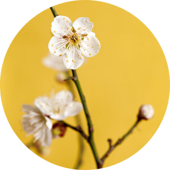
3월
매화차
섬진강 매화차는 겨울의 추위가 채 가시지 않은 이월말에서 삼월초에 막 피어나기 시작하는 지리산 청매화 홍매화 토종매화꽃을 채취해서 만들었습니다 고귀한 청초함을 가진 꽃매화의 그윽한 봄 향기를 당신께 드립니다.
-
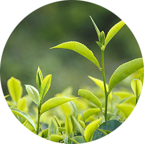
4월
우전
우전은 한 겨울 눈속에서 지리산 영기를 머금고 자란 어린 순과 잎을 곡우 전에 정성껏 손으로 따모아 전통적인 덖음차 제다법으로 만들어 감칠맛이 뛰어나고 부드러우며 은은한 향을 지닌 우전차 입니다.
-
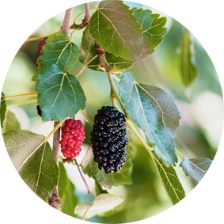
5월
뽕잎차
잘자란 뽕잎을 따모아 정성껏 덖어서 만든 차로 쌉쌀하고 달콤한 맛과 독특한 향으로 신선들이 먹는 음식이라 했을만큼 자연의 싱그러움이 깃들어 있는 차입니다.
-
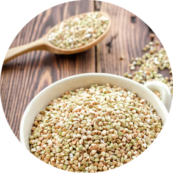
6월
타타리메밀차
타타리 메밀은 특유의 구수한 맛과 향으로 누구나 부담없이 즐길 수 있는 차 입니다.
-
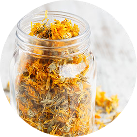
7월
마리골드 블라썸
마테를 베이스로 상큼한 레몬그라스와 금잔화를 블렌딩하여 은은한 상큼한 맛이 좋은 차 입니다.
-
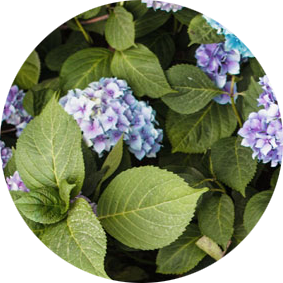
8월
수국차
수국차는 일교차가 크고 안개가 자욱한 고산지에서 자란 수국차 나뭇잎을 팔월 중순부터 채취하여 자연 건조한 후에 정성껏 만들었습니다. 상쾌한 비당성 단맛과 은은한 박하향이 일품인 차 입니다.
-
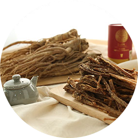
10월
도라지차
특유의 구수한 향과 입안을 상쾌하게 하는 쌉싸름한 맛으로 환절기에 좋은 차 입니다.
-
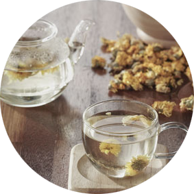
11월
국화차
국화차는 서리를 맞아 알맞게 핀 국화꽃을 정성껏 따모아 선별한 다음 끓는 물에 데쳐낸 후 바람이 잘 통하는 곳에 건조하여 그윽한 국화향과 가을의 정취를 음미하실 수 있습니다.
덖음차 제조과정
-
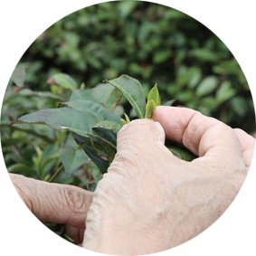
채엽
곡우 전, 그 해 처음 핀 어린 찻잎을 손으로 한잎 한잎 따모아 묵은잎이 들어가지 않게 채엽합니다.
-
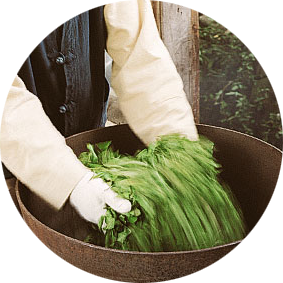
덖음
250°C 이상의 온도로 무쇠솥을 달구어 녹차 생잎을 빠르게 덖어냅니다.
-
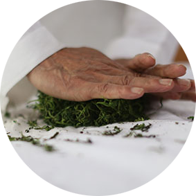
비비기
덖은 찻잎을 멍석으로 옮겨 흩뿌려 식힙니다. 찻잎이 식으면 둥글이며 비비는 데 이는 차가 잘 우러나게 하고 발효를 막으며 찻잎을 고르게 하여 우전차 고유 형태가 만들어집니다.
-
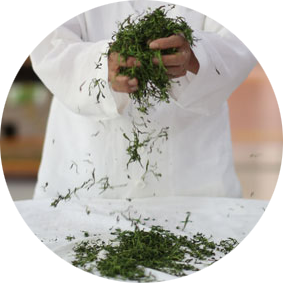
덖음과 비비기 수회 반복
덖기와 비비기를 수차례 반복하여 우전차 고유형태인 침형을 갖게 합니다. 엄밀한 의미에서 찻잎을 불에 쬐어 말리는 과정입니다.
-
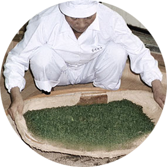
선별
비비기가 불완전한 찻잎을 집중적으로 골라냅니다.
-
끝덖음
마지막으로 가마솥에 끝덖음을 통해 숯불로 열처리하여 맛과 향을 냅니다. 끝덖음한 찻잎을 다시한번 선별 후 기밀봉투에 포장하여 마무리하면 명차 우전이 탄생됩니다.
토종차 & 일반차
-
토종차와 재배차의 차이점
무농약 토종차 하동 쌍계명차
쌍계명차의 차나무는 비료나 농약을 사용하지 않습니다. 토종차 나무에 비료나 농약을 사용하는 것은 길게 곧은 뿌리를 내리는 차나무의 생태를 파괴하는 일이며 깊은 땅속의 순수한 기운을 흡수할 수 없게합니다. 토종차의 곧고 바른 뿌리에서 싹을 띄운 찻잎으로 만든 차에서 생명의 기운이 가득합니다.
-
개량종(재배차)의 뿌리와 채엽
뿌리가 지면에서 깊지 않게 나서 땅속의 순수한 기운을 흡수하며 자라기 어렵습니다. 인공적으로 재배되는 차는 대량샌산의 이점은 있으나, 공정의 많은 부분을 기계에 의존하고 있습니다. 기계를 사용하려면 우선 차나무의 높이가 일정해야 하고 기계를 사용하기 편리하도록 전정을 해야합니다. 따라서 손으로 한잎, 한잎 정성스레 따는 토종 차보다는 깊이는 조금 다를 수 있습니다.
쌍계명차 제다법
쌍계 제다법의 핵심
-
엄격한 수확시기
쌍계명차의 제다법의 핵심은
각 차의 수확 시기를 엄격하게 준수합니다. -
수제 채엽
한잎, 한잎, 손으로 정성스럽게 채엽하며,
엄격한 선별 과정을 거칩니다. -
채엽시기에 따른 제품생산
녹차의 경우, 벽소령, 우전, 작설 순으로
등급을 구분하여 제품을 생산합니다.